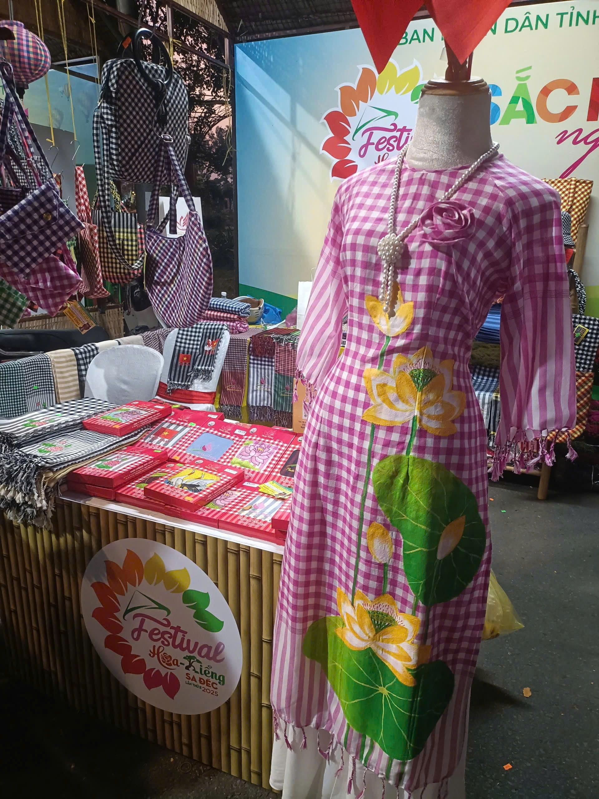
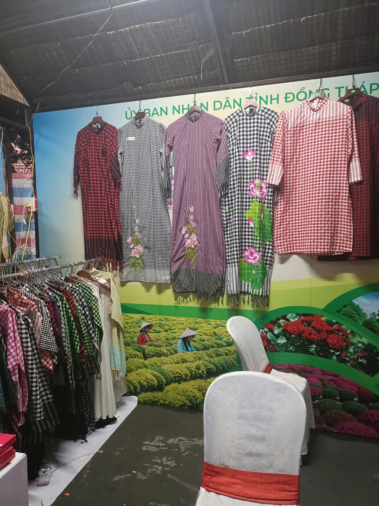
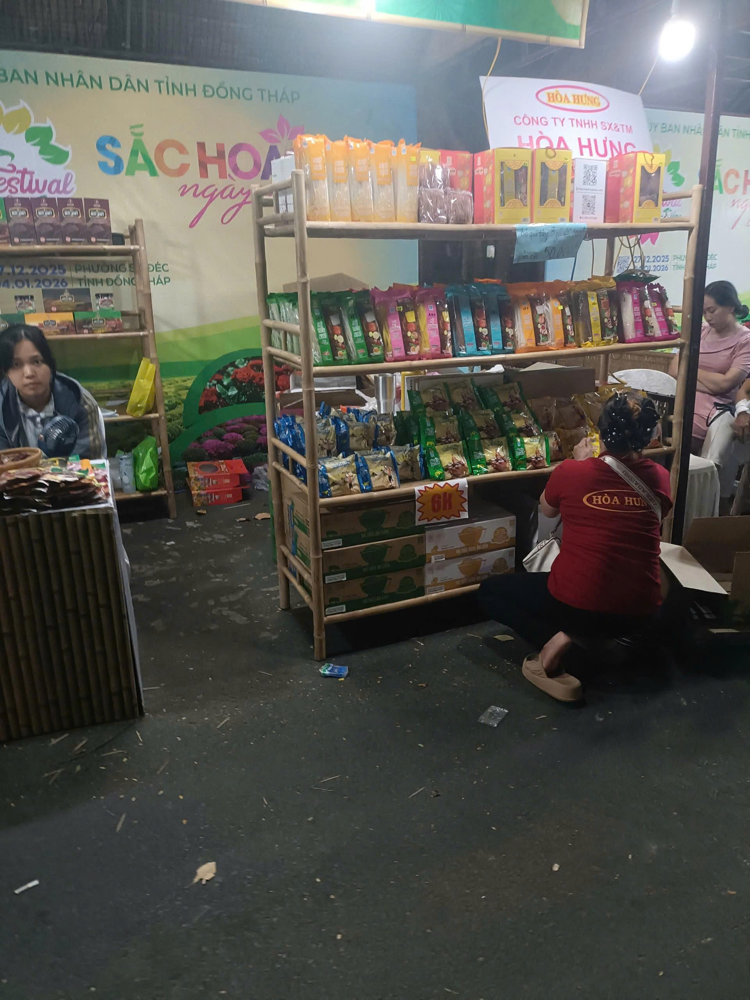
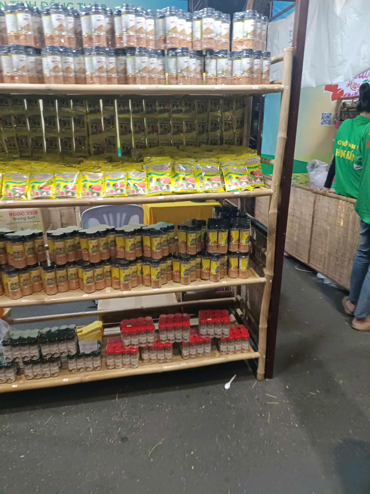
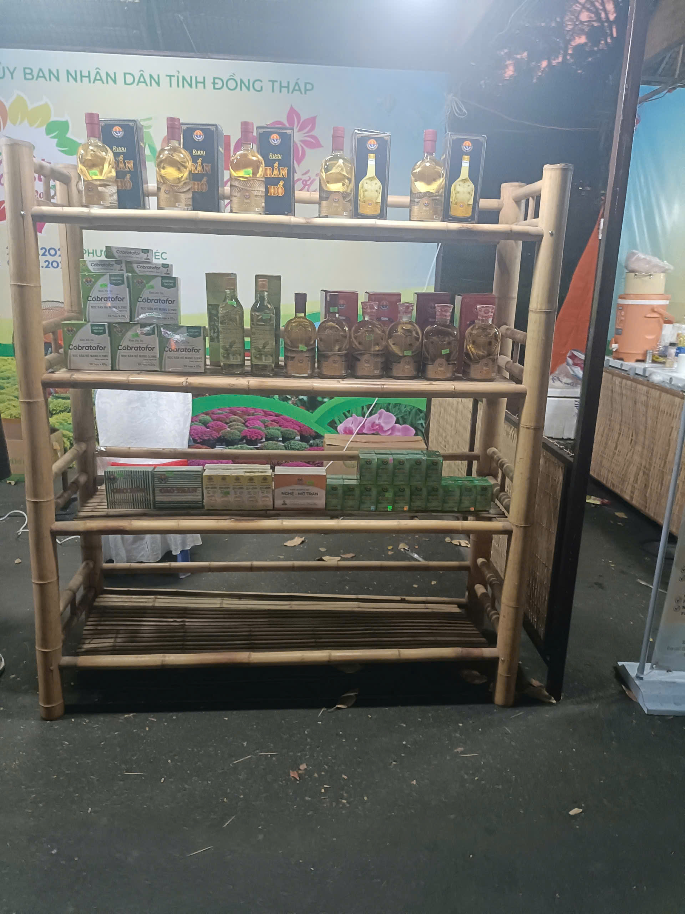
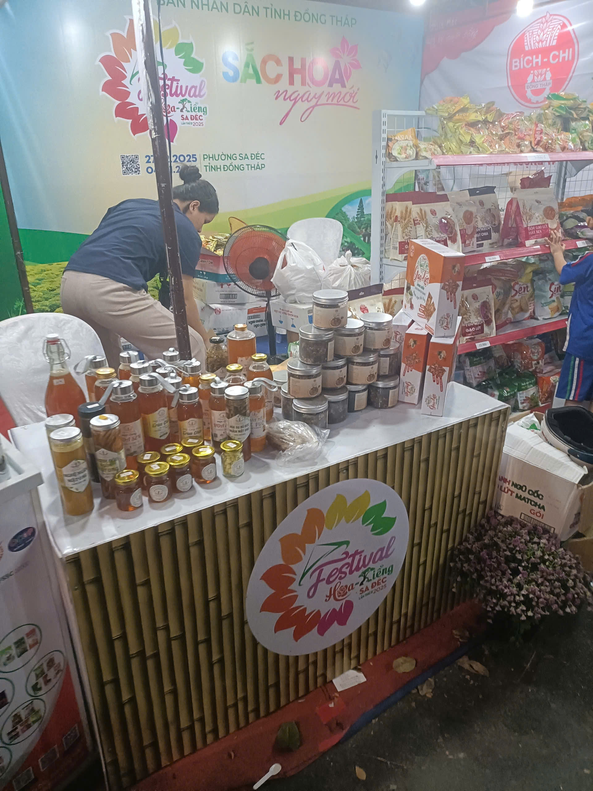
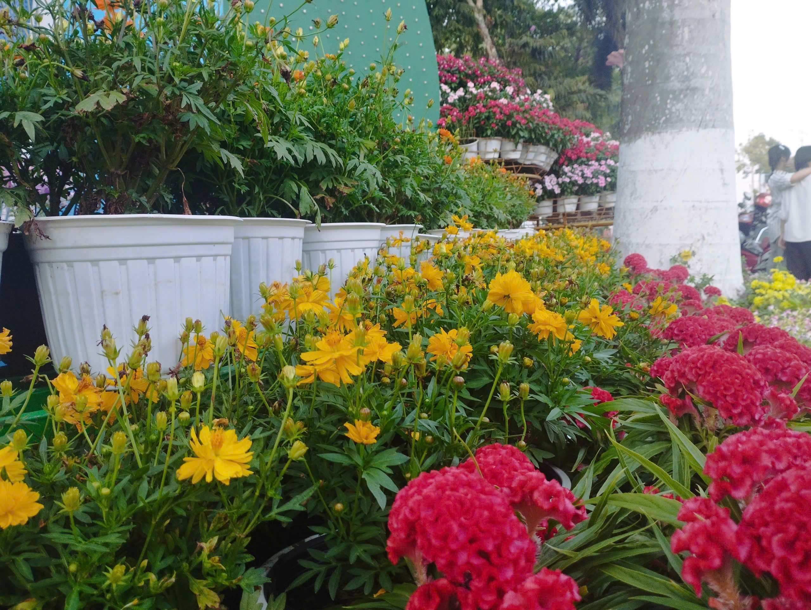
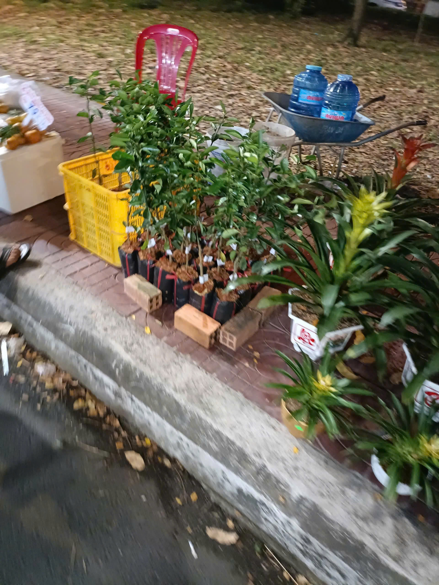
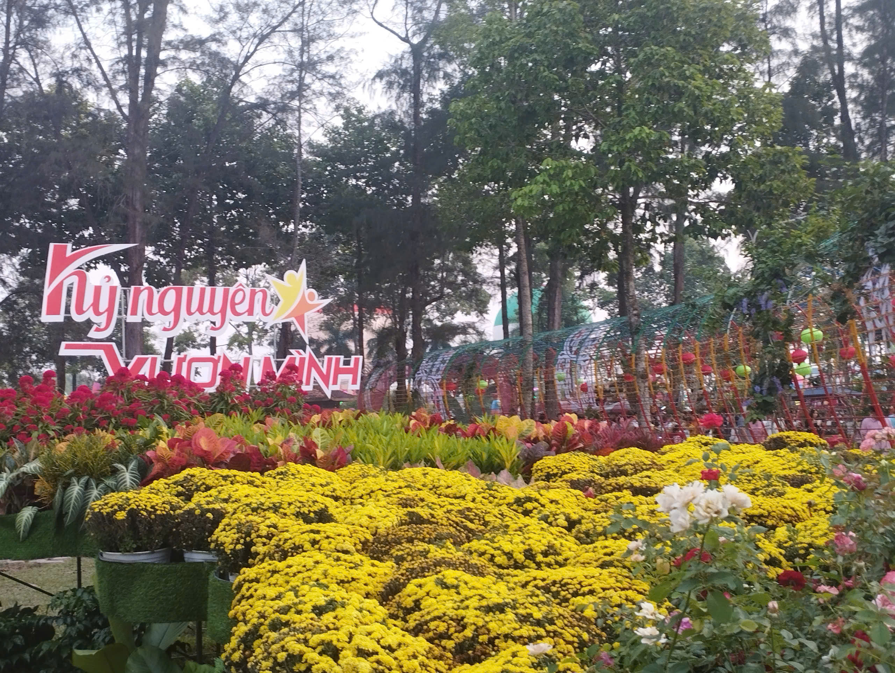

Tiêu đề: Khi chiếc Khăn Rằn hóa thân thành tà Áo Dài
Địa điểm: Festival Hoa - Kiểng Sa Đéc.
Chiếc khăn rằn Nam Bộ biểu tượng của sự cần cù, chân chất nay đã khoác lên mình diện mạo mới đầy kiêu sa. Sự kết hợp giữa họa tiết caro đặc trưng và những đóa sen vàng rực rỡ trên tà áo dài tạo nên một bản giao hưởng tuyệt vời giữa truyền thống và hiện đại.Người ta thường thấy khăn rằn vắt vẻo trên vai những người mẹ, người chị tảo tần sớm khuya. Nhưng tại Festival Hoa Sa Đéc năm nay, chiếc khăn ấy đã "hóa thân" thành tà áo dài kiêu sa, mang theo hơi thở của đất và người phương Nam.Tại Đồng Tháp có làng nghề dệt choàng (khăn rằn) Long Khánh Hồng rất nổi tiếng. Đây có thể là nơi xuất xứ của những thước vải tạo nên bộ áo dài tuyệt đẹp này.




Tiêu đề: Mật ngọt từ xứ sở ngàn hoa
Địa điểm: Festival Hoa - Kiểng Sa Đéc.
Mật ong được ví như "giọt vàng" của đất trời.Nó tượng trưng cho sự cần cù, nhẫn nại và tinh thần làm việc tập thể của loài ong – cũng chính là đức tính đáng quý của người nông dân miền Tây. Từ xưa đến nay, mật ong luôn được xem là một vị thuốc quý trong y học cổ truyền.Bồi bổ cơ thể. Mang ý nghĩa về một cuộc sống khỏe mạnh, dẻo dai.
Chiếc khăn rằn Nam Bộ biểu tượng của sự cần cù, chân chất nay đã khoác lên mình diện mạo mới đầy kiêu sa. Sự kết hợp giữa họa tiết caro đặc trưng và những đóa sen vàng rực rỡ trên tà áo dài tạo nên một bản giao hưởng tuyệt vời giữa truyền thống và hiện đại.Người ta thường thấy khăn rằn vắt vẻo trên vai những người mẹ, người chị tảo tần sớm khuya. Nhưng tại Festival Hoa Sa Đéc năm nay, chiếc khăn ấy đã "hóa thân" thành tà áo dài kiêu sa, mang theo hơi thở của đất và người phương Nam.Tại Đồng Tháp có làng nghề dệt choàng (khăn rằn) Long Khánh Hồng rất nổi tiếng. Đây có thể là nơi xuất xứ của những thước vải tạo nên bộ áo dài tuyệt đẹp này.




Hoa Cúc Mâm Xôi
Chiếc khăn rằn Nam Bộ biểu tượng của sự cần cù, chân chất nay đã khoác lên mình diện mạo mới đầy kiêu sa. Sự kết hợp giữa họa tiết caro đặc trưng và những đóa sen vàng rực rỡ trên tà áo dài tạo nên một bản giao hưởng tuyệt vời giữa truyền thống và hiện đại.Người ta thường thấy khăn rằn vắt vẻo trên vai những người mẹ, người chị tảo tần sớm khuya. Nhưng tại Festival Hoa Sa Đéc năm nay, chiếc khăn ấy đã "hóa thân" thành tà áo dài kiêu sa, mang theo hơi thở của đất và người phương Nam.Tại Đồng Tháp có làng nghề dệt choàng (khăn rằn) Long Khánh Hồng rất nổi tiếng. Đây có thể là nơi xuất xứ của những thước vải tạo nên bộ áo dài tuyệt đẹp này.



- Cúc mâm xôi vàng: Những chậu hoa màu vàng tươi ở giữa, biểu tượng cho sự thịnh vượng và may mắn..
- Cúc mâm xôi màu cam đỏ/đỏ: Phía góc trái và phía trên của ảnh. Đây là các giống cúc mới hoặc cúc đổi màu, rất được ưa chuộng trong những năm gần đây tại làng hoa Sa Đéc.
- Hoa Cúc Lá Nhám (Zinnia - Màu hồng cánh sen) Các luống hoa màu hồng đậm rực rỡ ở phía dưới và bên phải ảnh chính là hoa Cúc Lá Nhám (còn gọi là hoa Bách Nhật hoặc hoa Duyên Cúc).
- Hoa Mào Gà (Màu vàng phía xa) Phía trên góc phải, bên cạnh các chậu cúc, bạn có thể thấy những cụm hoa màu vàng có hình dáng thuôn dài, vươn cao. Đó là Hoa Mào Gà (loại mào gà búa hoặc mào gà đuôi phụng).
- Hoa Hồng (Phía giữa các cụm cúc) Thấp thoáng ở giữa các khóm cúc mâm xôi là một vài bụi Hoa Hồng với màu vàng mỡ gà. Sa Đéc vốn rất nổi tiếng với các giống hồng cổ và hồng ngoại.
Ý nghĩa của sự kết hợp này
Trong các lễ hội hoa, việc bài trí nhiều loài hoa với các tông màu nóng (đỏ, vàng, hồng) như trong ảnh mang ý nghĩa về một khởi đầu mới rực rỡ, sung túc và tràn đầy năng lượng. Nó phản ánh đúng tinh thần "Sắc hoa ngày mới" mà Festival hướng tới.